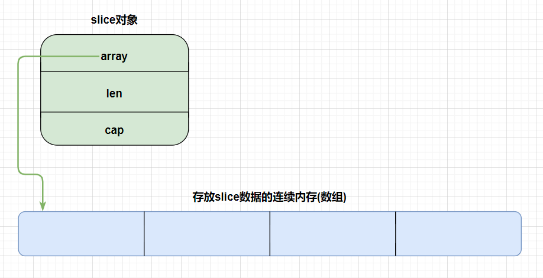
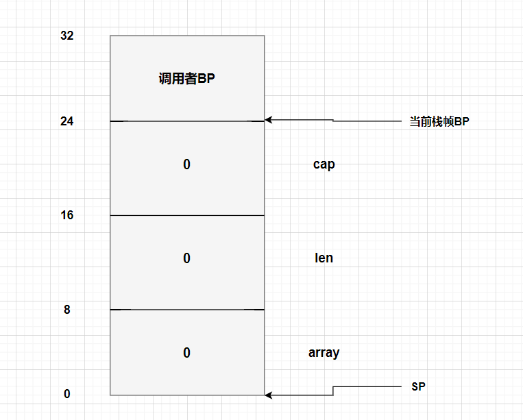

在Go语言中，slice(切片)是Gopher开发中最常用数据结构之一，又称为动态数组，其长度并不固定，我们可以向切片中追加元素，它会在容量不足时自动扩容。本文将结合Go1.15
slice创建 在Go语言中，创建切片的方式有一下几种 :
序号
方式
示例
1
直接声明
var slice []int
2
new
*new([]int)
3
字面量
[]int{1, 2, 3}
4
make
make([]int, 1, 2)
5
从切片/数组截取
array[:] / sourceSlice[:]
不同的创建方式对应的底层实现也有一定的区别，在后文笔者会从汇编层面上对这几种方式的汇编实现进行剖析，如有偏颇之处，敬请指正。
前置知识 为了方便读者理解，也为了行文结构清晰，在正式介绍slice源码之前，笔者想先对后面涉及到的一些内置类型和常量进行说明
该类型是一个指针类型，并且任何类型的指针值都可以转换为该类型，该类型可以转换为任何类型的指针值。更多介绍可以直接查看src/unsafe/unsafe.go中对Pointer的注释，非常详细
用于记录slice一些信息，其中的size字段就记录了该slice类型的大小(int64类型slice中size字段为8)
该类型是GoLang的内置类型，在64位机上可以理解为一个64位无符号整数，能够表示64位机上所有的地址
src/runtime/internal/sys中定义的常量：
1 const PtrSize = 4 << (^uintptr (0 ) >> 63 )
runtime/internal/math/math.go中定义的常量：
1 const MaxUintptr = ^uintptr (0 )
runtime/malloc.go中定义的常量，根据源码注释：在64位机上取值为2^32 - 1
是否开启race竞态检测，默认为false，当使用build -race时为true
使用build -msan时为true，windows amd64位机不支持该命令
到此，笔者对后面所有需要用到的类型，常量都做了简单了介绍，如果读者对某些地方有疑问或者不理解，不妨直接查看源码或写一写demo测试验证一下自己的疑惑；另外，笔者也会在后文用到以上类型/常量时再次进行介绍，希望能够解决读者的问题。
slice源码 slice相关源码位于/src/runtime/slice.go下，在本节笔者将对slice源码文件进行全面解读，本节内容是笔者基于自己理解并结合相关资料总结的来，难免会出现偏颇甚至错误之处，请读者批评指正。
slice底层结构 slice底层由runtime/slice.go中的结构体slice
1 2 3 4 5 type slice struct { array unsafe.Pointer len int cap int }
至此我们可以用下图来表示一个slice示例

构造切片-makeslice() 该函数用来构造一个slice对象，源码如下
1 2 3 4 5 6 7 8 9 10 11 12 13 14 15 16 17 18 func makeslice (et *_type, len , cap int ) unsafe .Pointer mem, overflow := math.MulUintptr(et.size, uintptr (cap )) if overflow || mem > maxAlloc || len < 0 || len > cap { mem, overflow := math.MulUintptr(et.size, uintptr (len )) if overflow || mem > maxAlloc || len < 0 { panicmakeslicelen() } panicmakeslicecap() } return mallocgc(mem, et, true ) }
可以看到makeslice()函数的源码逻辑非常简单：根据slice类型，长度以及容量计算出需要的内存大小，如果合法则调用mallocgc申请相应的连续内存并返回首地址。那么是如何计算出所需的内存大小呢？让我们再看看MulUintptr()函数
1 2 3 4 5 6 7 8 9 func MulUintptr (a, b uintptr ) (uintptr , bool ) if a|b < 1 <<(4 *sys.PtrSize) || a == 0 { return a * b, false } overflow := b > MaxUintptr/a return a * b, overflow }
MulUintptr函数的实现也比较简单，利用一些已有常量计算所需内存大小并判断是否溢出。
切片扩容-growslice() 切片是一个动态数组，当容量不足时会自动扩容，自动扩容实际上就是调用growslice()函数
1 2 3 4 5 6 7 8 9 10 11 12 13 14 15 16 17 18 19 20 21 22 23 24 25 26 27 28 29 30 31 32 33 34 35 36 37 38 39 40 41 42 43 44 45 46 47 48 49 50 51 52 53 54 55 56 57 58 59 60 61 62 63 64 65 66 67 68 69 70 71 72 73 74 75 76 77 78 79 80 81 82 83 84 85 86 87 88 89 90 91 92 93 94 95 96 97 98 99 100 101 102 103 104 105 106 func growslice (et *_type, old slice, cap int ) slice if raceenabled { callerpc := getcallerpc() racereadrangepc(old.array, uintptr (old.len *int (et.size)), callerpc, funcPC(growslice)) } if msanenabled { msanread(old.array, uintptr (old.len *int (et.size))) } if cap < old.cap { panic (errorString("growslice: cap out of range" )) } if et.size == 0 { return slice{unsafe.Pointer(&zerobase), old.len , cap } } newcap := old.cap doublecap := newcap + newcap if cap > doublecap { newcap = cap } else { if old.len < 1024 { newcap = doublecap } else { for 0 < newcap && newcap < cap { newcap += newcap / 4 } if newcap <= 0 { newcap = cap } } } var overflow bool var lenmem, newlenmem, capmem uintptr switch { case et.size == 1 : lenmem = uintptr (old.len ) newlenmem = uintptr (cap ) capmem = roundupsize(uintptr (newcap)) overflow = uintptr (newcap) > maxAlloc newcap = int (capmem) case et.size == sys.PtrSize: lenmem = uintptr (old.len ) * sys.PtrSize newlenmem = uintptr (cap ) * sys.PtrSize capmem = roundupsize(uintptr (newcap) * sys.PtrSize) overflow = uintptr (newcap) > maxAlloc/sys.PtrSize newcap = int (capmem / sys.PtrSize) case isPowerOfTwo(et.size): var shift uintptr if sys.PtrSize == 8 { shift = uintptr (sys.Ctz64(uint64 (et.size))) & 63 } else { shift = uintptr (sys.Ctz32(uint32 (et.size))) & 31 } lenmem = uintptr (old.len ) << shift newlenmem = uintptr (cap ) << shift capmem = roundupsize(uintptr (newcap) << shift) overflow = uintptr (newcap) > (maxAlloc >> shift) newcap = int (capmem >> shift) default : lenmem = uintptr (old.len ) * et.size newlenmem = uintptr (cap ) * et.size capmem, overflow = math.MulUintptr(et.size, uintptr (newcap)) capmem = roundupsize(capmem) newcap = int (capmem / et.size) } if overflow || capmem > maxAlloc { panic (errorString("growslice: cap out of range" )) } var p unsafe.Pointer if et.ptrdata == 0 { p = mallocgc(capmem, nil , false ) memclrNoHeapPointers(add(p, newlenmem), capmem-newlenmem) } else { p = mallocgc(capmem, et, true ) if lenmem > 0 && writeBarrier.enabled { bulkBarrierPreWriteSrcOnly(uintptr (p), uintptr (old.array), lenmem-et.size+et.ptrdata) } } memmove(p, old.array, lenmem) return slice{p, old.len , newcap} }
growslice扩容逻辑如下：下面笔者用: needCap代表需要的容量，oldCap代表老切片容量，newCap代表新切片内存对齐前的容量
如果切片类型大小为0，直接返回新切片
如果needCap > oldCap * 2，则newCap = needCap
如果oldCap < 1024，则newCap = oldCap * 2
oldCap = oldCap * 1.25，直到oldCap > needCap或oldCap < 0为止，如果没有发生溢出，此时的oldCap就是newCap根据切片类型的大小(1、8、2的幂次方、普通)求得 新切片得长度，容量
将老切片中的内容拷贝到新切片
返回新切片
从源码可以看出，newCap并不是新切片真正的cap，还需要进行内存对齐操作，目的是为了提高内存的分配效率并减少碎片。内存对齐操作由roundupsize实现，源码如下:
1 2 3 4 5 6 7 8 9 10 11 12 13 14 15 func roundupsize (size uintptr ) uintptr if size < _MaxSmallSize { if size <= smallSizeMax-8 { return uintptr (class_to_size[size_to_class8[divRoundUp(size, smallSizeDiv)]]) } else { return uintptr (class_to_size[size_to_class128[divRoundUp(size-smallSizeMax, largeSizeDiv)]]) } } if size+_PageSize < size { return size } return alignUp(size, _PageSize) }
该函数实现比较简单，根据当前大小，利用代码中硬编的一些参数来进行内存扩容
切片拷贝-copy() 当我们使用copy(src, dst)来进行切片拷贝时，编译器会根据是否是运行时调用分情况进行处理(具体逻辑见src/cmd/compile/internal/walk.go中copyany()函数)：
1 2 3 4 5 6 7 8 9 10 11 12 13 14 15 16 17 18 19 20 21 22 23 24 25 26 27 28 29 30 31 32 33 34 func slicecopy (toPtr unsafe.Pointer, toLen int , fmPtr unsafe.Pointer, fmLen int , width uintptr ) int if fmLen == 0 || toLen == 0 { return 0 } n := fmLen if toLen < n { n = toLen } if width == 0 { return n } if raceenabled { callerpc := getcallerpc() pc := funcPC(slicecopy) racereadrangepc(fmPtr, uintptr (n*int (width)), callerpc, pc) racewriterangepc(toPtr, uintptr (n*int (width)), callerpc, pc) } if msanenabled { msanread(fmPtr, uintptr (n*int (width))) msanwrite(toPtr, uintptr (n*int (width))) } size := uintptr (n) * width if size == 1 { *(*byte )(toPtr) = *(*byte )(fmPtr) } else { memmove(toPtr, fmPtr, size) } return n }
可以看到该函数实际上还是调用了memmove函数来实现copy。
结合Plan9汇编 到此为止，src/runtime/slice.go中slice源码的重要部分笔者已经介绍完毕了，下面就结合Plan9汇编来看一下slice汇编层面上的一些实现，从而帮助读者更好的理解slice的实现。
获取汇编代码 再开始之前，读者需要了解一下两个获取汇编代码的命令
go tool compile -S -N -l xxx.go:该命令接受一个.go源码文件，并且能够在控制台打印出该源码文件的汇编代码go tool objdump xxx.exe:该命令接受一个可执行文件(windows下是.exe)，对其反汇编得到相应的汇编代码，使用该命令前需要使用go build -gcflags="-N -l" xxx.go获取可执行文件，其中-gcflags="-N -l"能够禁止编译器在编译期间进行优化，以确保反汇编得到的汇编代码最大程度上和源码对应。
深入汇编实现 笔者将通过汇编代码，探究以不同方式创建slice时汇编实现的不同以及slice在汇编代码中的表示。
声明方式 当我们以如下方式创建slice时
1 2 3 4 func main () var slice []int _ = slice }
查看汇编代码如下
1 2 3 4 5 6 7 8 9 10 11 12 "".main STEXT nosplit size=40 args=0x0 locals=0x20 0x0000 00000 (main.go:3) TEXT "".main(SB), NOSPLIT|ABIInternal, $32-0 // 局部变量+可能需要的额外调用函数的参数空间的总大小为32(不包括调用其它函数时的 ret address 的大小), 0表示函数的参数 + 返回值大小为0 0x0000 00000 (main.go:3) SUBQ $32, SP // 当前函数栈为32字节 0x0004 00004 (main.go:3) MOVQ BP, 24(SP) 0x0009 00009 (main.go:3) LEAQ 24(SP), BP // 存放调用者BP ... // 省略部分GC相关汇编 0x000e 00014 (main.go:6) MOVQ $0, "".slice(SP) // 存放sliceHeader的array字段 0x0016 00022 (main.go:6) XORPS X0, X0 // X0是一个128位寄存器，将X0寄存器清0 0x0019 00025 (main.go:6) MOVUPS X0, "".slice+8(SP) // 将SP + 8开始的16个字节赋值为0，即len = 0, cap = 0 0x001e 00030 (main.go:15) MOVQ 24(SP), BP // 恢复调用者BP 0x0023 00035 (main.go:15) ADDQ $32, SP // 清除当前函数栈帧 0x0027 00039 (main.go:15) RET // 返回
通过以上汇编代码我们发现，当使用声明方式创建slice时，底层并没有调用makeslice函数，而是简单的使用栈中的三个值
(SP, SP + 8, SP + 16)来表示一个slice的array, len和cap。如下图：

new关键字 当我们以如下方式创建slice时
1 2 3 4 func main () slice := *new ([]int ) _ = slice }
由于new()函数返回对象指针，因此我们需要使用*对返回值进行取值操作从而获取slice对象，查看汇编代码如下
1 2 3 4 5 6 7 8 9 10 11 12 13 14 15 16 17 18 19 20 21 22 "".main STEXT nosplit size=82 args=0x0 locals=0x40 0x0000 00000 (main.go:3) TEXT "".main(SB), NOSPLIT|ABIInternal, $64-0 // 局部变量+可能需要的额外调用函数的参数空间的总大小为64(不包括调用其它函数时的 ret address 的大小), 0表示函数的参数 + 返回值大小为0 0x0000 00000 (main.go:3) SUBQ $64, SP // main函数栈大小为64字节 0x0004 00004 (main.go:3) MOVQ BP, 56(SP) 0x0009 00009 (main.go:3) LEAQ 56(SP), BP // 存储调用者BP，并修改BP为当前main函数BP ... // 省略部分GC相关汇编代码 0x000e 00014 (main.go:4) MOVQ $0, ""..autotmp_2+32(SP) // 将SP + 32位置的8个字节置0 0x0017 00023 (main.go:4) XORPS X0, X0 // 将128位X0寄存器清0 0x001a 00026 (main.go:4) MOVUPS X0, ""..autotmp_2+40(SP) // 将SP + 40位置的16个字节置0，用于表示sliceHeader的len和cap ... // 省略GC相关汇编，下面GC相关汇编全被省略 0x001f 00031 (main.go:4) LEAQ ""..autotmp_2+32(SP), AX 0x0024 00036 (main.go:4) MOVQ AX, ""..autotmp_1(SP) // 这两条汇编将sliceHeader开始的地址值赋值给SP开始的8个字节 0x0028 00040 (main.go:4) TESTB AL, (AX) 0x002a 00042 (main.go:4) MOVQ ""..autotmp_2+32(SP), AX 0x002f 00047 (main.go:4) MOVQ ""..autotmp_2+40(SP), CX 0x0034 00052 (main.go:4) MOVQ ""..autotmp_2+48(SP), DX 0x0039 00057 (main.go:4) MOVQ AX, "".slice+8(SP) // sliceHeader的array字段 0x003e 00062 (main.go:4) MOVQ CX, "".slice+16(SP) // sliceHeader的len字段 0x0043 00067 (main.go:4) MOVQ DX, "".slice+24(SP) // sliceHeader的cap字段 0x0048 00072 (main.go:5) MOVQ 56(SP), BP 0x004d 00077 (main.go:5) ADDQ $64, SP // 恢复调用者BP，清除当前栈帧 0x0051 00081 (main.go:5) RET // 返回
字面量 当我们以如下方式创建slice时
1 2 3 4 func main () slice := []int {1 , 2 , 3 } _ = slice }
查看汇编代码如下
1 2 3 4 5 6 7 8 9 10 11 12 13 14 15 16 17 18 19 20 21 22 23 24 25 "".main STEXT nosplit size=108 args=0x0 locals=0x40 0x0000 00000 (main.go:3) TEXT "".main(SB), NOSPLIT|ABIInternal, $64-0 0x0000 00000 (main.go:3) SUBQ $64, SP 0x0004 00004 (main.go:3) MOVQ BP, 56(SP) 0x0009 00009 (main.go:3) LEAQ 56(SP), BP // 构造main函数栈帧并存储调用者BP ... // 省略GC相关汇编，下面直接省略不做提示 0x000e 00014 (main.go:4) MOVQ $0, ""..autotmp_3(SP) 0x0016 00022 (main.go:4) XORPS X0, X0 0x0019 00025 (main.go:4) MOVUPS X0, ""..autotmp_3+8(SP) // 将SP开始的24字节置0, 该内存用于后面存储切片元素 0x001e 00030 (main.go:4) LEAQ ""..autotmp_3(SP), AX 0x0022 00034 (main.go:4) MOVQ AX, ""..autotmp_1+24(SP) // 将SP + 24开始的8个字节置为sliceHeader中array的首地址 0x0027 00039 (main.go:4) TESTB AL, (AX) 0x0029 00041 (main.go:4) MOVQ $1, ""..autotmp_3(SP) // 存储切片元素1 0x0031 00049 (main.go:4) TESTB AL, (AX) 0x0033 00051 (main.go:4) MOVQ $2, ""..autotmp_3+8(SP) // 存储切片元素2 0x003c 00060 (main.go:4) TESTB AL, (AX) 0x003e 00062 (main.go:4) MOVQ $3, ""..autotmp_3+16(SP) // 存储切片元素3 0x0047 00071 (main.go:4) TESTB AL, (AX) 0x0049 00073 (main.go:4) JMP 75 0x004b 00075 (main.go:4) MOVQ AX, "".slice+32(SP) // 存储sliceHeader的array字段 0x0050 00080 (main.go:4) MOVQ $3, "".slice+40(SP) // 存储sliceHeader的len字段 0x0059 00089 (main.go:4) MOVQ $3, "".slice+48(SP) // 存储sliceHeader的cap字段 0x0062 00098 (main.go:5) MOVQ 56(SP), BP 0x0067 00103 (main.go:5) ADDQ $64, SP // 恢复调用者BP并清除当前函数栈帧 0x006b 00107 (main.go:5) RET // 返回
由于进行了逃逸分析后发现当前slice切片可以在栈上分配，所以编译器再将slice的内容{1, 2, 3}都分配在了栈上。
make方式 当我们以如下方式创建slice时
1 2 3 4 func main () slice := make ([]int , 1 , 2 ) _ = slice }
查看汇编代码如下
1 2 3 4 5 6 7 8 9 10 11 12 13 14 15 16 "".main STEXT nosplit size=64 args=0x0 locals=0x30 0x0000 00000 (main.go:3) TEXT "".main(SB), NOSPLIT|ABIInternal, $48-0 0x0000 00000 (main.go:3) SUBQ $48, SP 0x0004 00004 (main.go:3) MOVQ BP, 40(SP) 0x0009 00009 (main.go:3) LEAQ 40(SP), BP // 创建main函数栈帧并保存调用者BP ... // 省略GC相关汇编 0x000e 00014 (main.go:4) XORPS X0, X0 0x0011 00017 (main.go:4) MOVUPS X0, ""..autotmp_1(SP) 0x0015 00021 (main.go:4) LEAQ ""..autotmp_1(SP), AX 0x0019 00025 (main.go:4) TESTB AL, (AX) 0x001f 00031 (main.go:4) MOVQ AX, "".slice+16(SP) // sliceHeader的array字段 0x0024 00036 (main.go:4) MOVQ $1, "".slice+24(SP) // len字段 0x002d 00045 (main.go:4) MOVQ $2, "".slice+32(SP) // cap字段 0x0036 00054 (main.go:5) MOVQ 40(SP), BP 0x003b 00059 (main.go:5) ADDQ $48, SP // 恢复调用者BP，清除当前栈帧 0x003f 00063 (main.go:5) RET // 返回
可以看到，这里虽然使用了make关键字，但是实际执行时却并没有调用makeslice函数，这是什么原因呢？这是因为编译器在编译时会进行一个判断：如果切片足够小并且没有发生逃逸，编译器会在栈上或者静态存储区开辟一块内存，并不会调用makeslice在堆上分配。下面来看一下调用makeslice在堆上分配的例子：
我们创建一个大切片，从而达到堆上分配的目的，代码如下
1 2 3 4 func main () slice := make ([]int , 1 , 10000 ) _ = slice }
汇编代码如下所示
1 2 3 4 5 6 7 8 9 10 11 12 13 14 15 16 17 18 19 20 "".main STEXT size=115 args=0x0 locals=0x40 0x0000 00000 (main.go:3) TEXT "".main(SB), ABIInternal, $64-0 ... // 省略栈分裂，GC相关汇编 0x0016 00022 (main.go:3) SUBQ $64, SP 0x001a 00026 (main.go:3) MOVQ BP, 56(SP) 0x001f 00031 (main.go:3) LEAQ 56(SP), BP // 开辟当前main函数栈帧并保存调用者BP ... // 省略GC相关代码 0x0024 00036 (main.go:4) LEAQ type.int(SB), AX // 获取int类型大小 0x002b 00043 (main.go:4) MOVQ AX, (SP) 0x002f 00047 (main.go:4) MOVQ $1, 8(SP) 0x0038 00056 (main.go:4) MOVQ $10000, 16(SP) // 分别将size, len, cap作为调用makeslice参数压栈 0x0041 00065 (main.go:4) CALL runtime.makeslice(SB) // 调用makeslice创建slice 0x0046 00070 (main.go:4) MOVQ 24(SP), AX // 将makeslice函数返回值保存到AX中 0x004b 00075 (main.go:4) PCDATA $0, $0 0x004b 00075 (main.go:4) MOVQ AX, "".slice+32(SP) 0x0050 00080 (main.go:4) MOVQ $1, "".slice+40(SP) 0x0059 00089 (main.go:4) MOVQ $10000, "".slice+48(SP) // 将sliceHeader的array, len, cap字段保存在SP + 32开始的24个字节中 0x0062 00098 (main.go:15) MOVQ 56(SP), BP 0x0067 00103 (main.go:15) ADDQ $64, SP // 恢复调用者BP，清除当前栈帧 0x006b 00107 (main.go:15) RET // 返回
可以看到，这里笔者特意将slice的cap设为10000，这样编译器在处理时就会选择在堆上创建slice而不是在栈上。
从数组中获取 当我们以如下方式创建slice时
1 2 3 4 5 func main () array := [3 ]int {1 , 2 , 3 } slice := array[:1 ] _ = slice }
查看汇编代码如下
1 2 3 4 5 6 7 8 9 10 11 12 13 14 15 16 17 18 19 "".main STEXT nosplit size=99 args=0x0 locals=0x38 0x0000 00000 (main.go:3) TEXT "".main(SB), NOSPLIT|ABIInternal, $56-0 0x0000 00000 (main.go:3) SUBQ $56, SP 0x0004 00004 (main.go:3) MOVQ BP, 48(SP) 0x0009 00009 (main.go:3) LEAQ 48(SP), BP // 开辟main函数栈帧并保存调用者BP 0x000e 00014 (main.go:4) MOVQ $0, "".array(SP) 0x0016 00022 (main.go:4) XORPS X0, X0 0x0019 00025 (main.go:4) MOVUPS X0, "".array+8(SP) // 将SP开始的24个字节置0 0x001e 00030 (main.go:4) MOVQ $1, "".array(SP) 0x0026 00038 (main.go:4) MOVQ $2, "".array+8(SP) 0x002f 00047 (main.go:4) MOVQ $3, "".array+16(SP) // 为数组元素赋值 0x0038 00056 (main.go:5) LEAQ "".array(SP), AX // 将数组首地址赋值给AX 0x003c 00060 (main.go:5) TESTB AL, (AX) 0x0042 00066 (main.go:5) MOVQ AX, "".slice+24(SP) 0x0047 00071 (main.go:5) MOVQ $1, "".slice+32(SP) 0x0050 00080 (main.go:5) MOVQ $3, "".slice+40(SP) // 分别将array, len, cap填充到栈 0x0059 00089 (main.go:17) MOVQ 48(SP), BP 0x005e 00094 (main.go:17) ADDQ $56, SP // 恢复调用者BP并清楚栈帧 0x0062 00098 (main.go:17) RET // 返回
可以看到当我们从数组中获取slice时，数组和slice底层实际上共用了一块连续内存来存储数据。这里由于编译器判断数据量比较小且并没有发生逃逸，因此将数据分配在了栈上，下面来看一看分配在堆上的示例
1 2 3 4 5 6 7 8 9 func main () getSlice() } func getSlice () []int array := [3 ]int {1 , 2 , 3 } slice := array[:1 ] return slice }
可以看到这里笔者在getSlice()函数中创建一个slice并返回给main函数，使其发生逃逸，下面来看一看getSlice的汇编代码
1 2 3 4 5 6 7 8 9 10 11 12 13 14 15 16 17 18 19 20 21 22 23 24 25 26 27 28 29 30 31 32 33 "".getSlice STEXT size=181 args=0x18 locals=0x38 0x0000 00000 (main.go:16) TEXT "".getSlice(SB), ABIInternal, $56-24 // 局部变量+可能需要的额外调用函数的参数空间的总大小为56(不包括调用其它函数时的 ret address 的大小), 24表示函数的参数 + 返回值大小为24，由于getSlice函数没有参数，24就是返回值，即sliceHeader三个字段的大小 // 省略GC和栈分裂相关汇编 0x001a 00026 (main.go:16) SUBQ $56, SP 0x001e 00030 (main.go:16) MOVQ BP, 48(SP) 0x0023 00035 (main.go:16) LEAQ 48(SP), BP // 开辟getSlice函数栈帧，保存调用者(main函数)BP ... // 省略GC相关汇编 0x0028 00040 (main.go:16) MOVQ $0, "".~r0+64(SP) 0x0031 00049 (main.go:16) XORPS X0, X0 0x0034 00052 (main.go:16) MOVUPS X0, "".~r0+72(SP) // 将main函数中局部变量slice的三个字段置0 0x0039 00057 (main.go:17) LEAQ type.[3]int(SB), AX // 获取[3]int类型数组大小 0x0040 00064 (main.go:17) MOVQ AX, (SP) 0x0044 00068 (main.go:17) CALL runtime.newobject(SB) // 调用newobject在堆上创建数组 0x0049 00073 (main.go:17) MOVQ 8(SP), AX 0x004e 00078 (main.go:17) MOVQ AX, "".&array+16(SP) // 将数组首地址保存在SP + 16开始的8个字节中 0x0053 00083 (main.go:17) MOVQ ""..stmp_0(SB), CX 0x005a 00090 (main.go:17) MOVQ CX, (AX) 0x005d 00093 (main.go:17) MOVUPS ""..stmp_0+8(SB), X0 0x0064 00100 (main.go:17) MOVUPS X0, 8(AX) 0x0068 00104 (main.go:18) MOVQ "".&array+16(SP), AX // 为数组赋值{1, 2, 3} 0x0073 00115 (main.go:18) MOVQ AX, "".slice+24(SP) 0x0078 00120 (main.go:18) MOVQ $1, "".slice+32(SP) 0x0081 00129 (main.go:18) MOVQ $3, "".slice+40(SP) // 从数组创建slice切片 0x008a 00138 (main.go:19) MOVQ AX, "".~r0+64(SP) 0x008f 00143 (main.go:19) MOVQ $1, "".~r0+72(SP) 0x0098 00152 (main.go:19) MOVQ $3, "".~r0+80(SP) // 设置main函数局部变量slice的三个字段 0x00a1 00161 (main.go:19) MOVQ 48(SP), BP 0x00a6 00166 (main.go:19) ADDQ $56, SP // 恢复main函数BP，清除getSlice函数栈帧 0x00aa 00170 (main.go:19) RET // 返回 ""..stmp_0 SRODATA size=24 0x0000 01 00 00 00 00 00 00 00 02 00 00 00 00 00 00 00 ................ 0x0010 03 00 00 00 00 00 00 00
可以看到当发生逃逸时，就会调用newobject在堆上创建一个数组，然后slice和该数组共享底层的连续内存
总结 在本节中通过汇编代码可以很清楚的看到，slice在底层实现是通过三个变量:：
array : 保存数据的连续内存首地址
len: 数据长度
cap: 连续内存大小
并且当slice较小且没有发生逃逸时，编译器会选择在栈上分配而不是在堆上来保证效率。